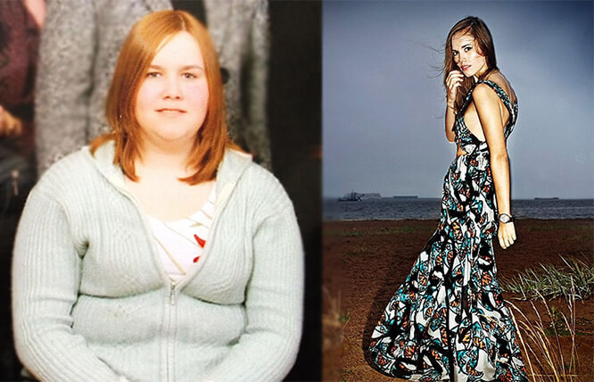
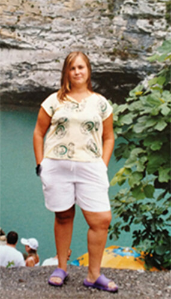
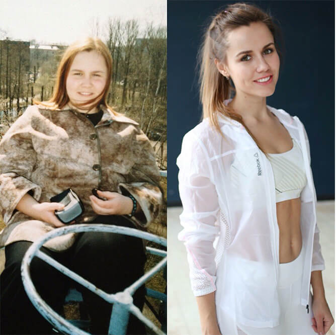
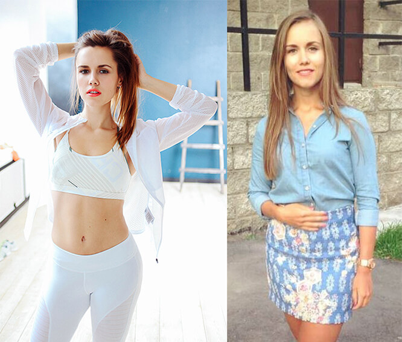
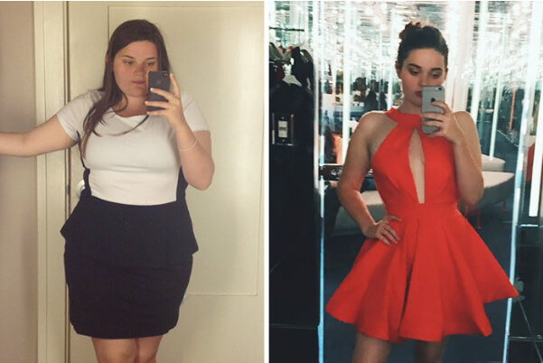
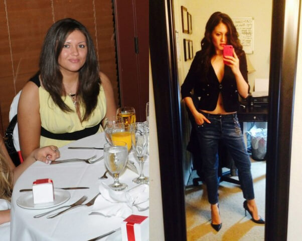
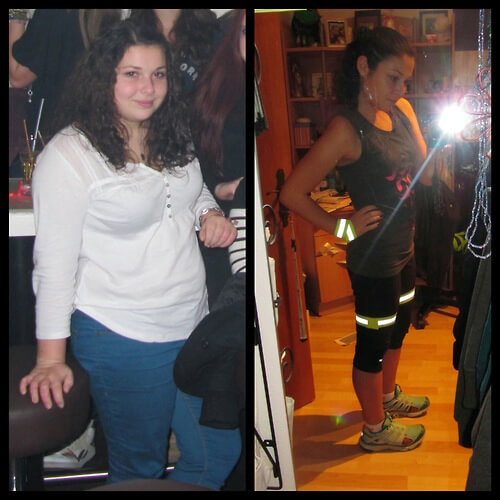
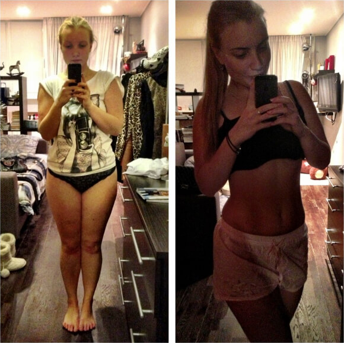
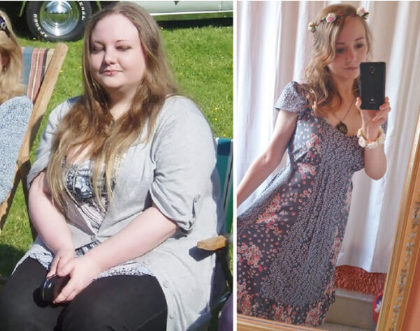

Am slăbit singură și vă voi ajuta și pe voi să slăbiți
Bună, tuturor! Îmi cer scuze, dar pur și simplu nu am avut timpul necesar pentru a răspunde la toate întrebările voastre. Așa cum aproape toate sunt despre aceeași intrebare - m-am săturat, cum să slăbim o dată pentru totdeauna? Și bineînțeles fără să ne dăunăm sănătatea! Așa că m-am decis să scriu în această postare și să vă povestesc cum am slăbit 26 kilograme .
Aceste fotografii au fost luate exact două luni între ele
Nu am fost nicioată slabă, dar corpul meu o luase razna și ajunsesem să am pielea căzută și cu "colăceii"
de grăsime - aveam o gușă care îmi atârna până la piept ca la un curcan, aveam grăsime și celulită
peste tot, pe burtă, pe picioare și chiar și pe brațe. Am aruncat toate tricourile fără mâneci după ce
am observat asta.
M-am epuizat de plâns în fața oglinzii până să reușesc să mă adun. Mai exact să
îmi adun corpul gras! Am încercat de toate în același timp, probabil la fel ca toate celelalte fete
naive ca și mine. M-am apucat de o dietă și am început să practic sport. Mă trezeam la răsăritul
soarelui, mâncam un ou crud (să nu încercați asta niciodată!) și mă târam afară, de-abia reușind să îmi
mișc picioarele. Am exclus mâncarea prăjită, mi-am făcut abonament la sală, mi-am cumpărat ceaiuri
pentru slăbit și mi-am umplut frigiderul cu iaurt. Setul complet, ca să zic așa. Credeți că am reușit?
Din contra! M-am îngrășat și mai mult, am pus din senin alte 5 kg pe durata acelor săptămâni de sport intens. În total, 89 kg! La o înălțime puțin peste 1,60 cm! Ulterior doctorii mi-au explicat că organismul se afla într-o stare de stres, așa că a început să depoziteze intens ”provizii”. Credea că vroiam să îl distrug. Uitasem gustul de pâine, uitasem ce înseamnă carnea, uitasem cum ni se topește înghețata în gură. Mâncam numai mere și beam numai apă, dar în zadar.
Pe scurt, pe durata a câteva luni am încercat diferite metode pentru slăbit, până într-o zi când m-am lăsat păgubașă.
Îmi este rușine să vorbesc despre asta, dar într-o zi m-am decis pur și simplu că îmi era sortit să mor o fată bătrână grasă înconjurată de 7 pisici. Așa că m-am dus direct la MacDonald’s, am cumpărat jumătate din menu și am halit tot în jumătate de oră. Apoi am plâns ore în șir, părea că nu se putea mai rău decât atât.
Apoi s-a întâmplat un miracol. Nu la toaleta de la MacDonald’s, ci două săptămâni mai târziu dar tot a
fost un miracol. Am văzut pe youtube un blog al unei italience care a povestit cum visase să scape de
blestemul din familia ei - toți erau grași. Black Latte a ajutat-o să
reușească.
Am comandat și eu Black Latte . Apoi am citit
informații pe internet despre acest produs. S-a dovedit că unele vedete au slăbit cu
acesta pentru a fi din nou pe marile ecrane. Nu credeam într-o transformare miraculoasă, din moment ce încercasem aproape toate dietele și
programele existente și nici unul nu m-a ajutat, așa că aveam dubii că Black
Latte mă va ajuta.
Ei bine, nu ar fi trebuit să am niciun dubiu!
Pachetul a fost livrat rapid, în mai puțin de o săptămână. În acel timp am citit multe recenzii și informații despre Black Latte și m-am asigurat că era alegerea cea mai bună. Am urmat instrucțiunile, am luat Black Latte de două ori pe zi, o dată dimineața și o dată seara.
Acum fiți atente. Ar fi mai bine dacă ați sta jos.
În 2 săptămâni am slăbit 13 kg! Asta înseamnă că am slăbit aproximativ un kilogram pe zi, vă vine să credeți?!
Milioane de femei din Europa și SUA au scăpat de kilogramele în plus cu ajutorul Black Latte . Conform statisticilor, 96,7% au obținut rezultate impresionante - fiecare a slăbit 12-17 kg în 23 zile!
O combinație unică de ingrediente face ca procesul de slăbit să fie ușor și real - rezultatele sunt impresionante!
Fesele au devenit cu aproape 10 cm mai subțiri, burta a dispărut pur și
simplu - nu îmi venea să cred. Pielea, părul - toate au devenit strălucitoare și sănătoase, coșurile de
pe spate și piept au dispărut chiar de la început.
Am început să cred că pot într-adevăr să
reușesc să mă transform dintr-o femeie grasă într-o adevărată prințesă - cântarul și oglinda nu mint!
Și credeți-mă, nu am urmat nicio dietă în acea perioadă, întreaga reușită a slăbitului am
realizat-o exclusiv cu ajutorul Black Latte .
Și cea de a treia săptămână a fost un succes - am slăbit 6 kg.
Și cel mai surprinzător a
fost că nu a trebuit să fac nimic - doar am luat Black Latte conform
instrucțiunilor și am avut grijă să nu uit să iau doza recomandată. Chiar și cea mai leneșă persoană
poate să facă asta.
În 3 săptămâni am dat jos 13 kg . Fără efort, restricții asupra alimentației sau exerciții fizice istovitoare. Burta mea plină de grăsime, brațele cu celulită și gușa au dispărut pentru totdeauna. Aproape că plâng de fericire în timp ce scriu asta))
După ce am urmat o dietă completă cu Black Latte - adică 1 lună de zile - am slăbit 26 kg. Nu suntem conștienți de câte miracole este capabil corpul uman dacă este ajutat. Nu mai am 20 de ani, vârsta la care kilogramele se acumulează și pot fi date jos rapid.
La mii de oameni nu le vine încă să creadă că acum arăt așa:
Apropo, Black Latte a fost testat de Academia Națională de Științe în 2012. Rezultatele ar fi avut efectul unei bombe, de aceea nu le-au făcut publice.
De ce? Deoarece pentru companiile farmaceutice, doctori, nutriționiști și clinici private, UN PRODUS CARE FUNCȚIONEAZĂ ÎNTR-ADEVĂR le face să dea faliment! Și mai ales un produs care este de asemenea și ieftin..
Acum le spun tuturor prietenilor și colegilor despre Black Latte deoarece
eu consider că toată lumea ar trebui să știe despre el. Este așa de bine să fii slab și energic și
vreau ca toți din jurul meu să înțeleagă câtă fericire poate aduce acest produs. Atunci când îl
comandați, vă rog să îl cumpărați numai de pe site-ul oficial al produsului.
Nu vă mai înfometați,
nu vă mai istoviți la sală, fiți deștepte acum că știți ce trebuie să faceți.
Încă visați la un corp suplu? Este timpul să acționați! Scăpați imediat de grăsimea oribilă!
Voi răspunde la cele mai populare întrebări:
Apar vergeturi după o slăbire rapidă?
Nu, Black Latte nu lasă vergeturi! Slăbirea, deși este destul de semnificativă,
este un proces treptat, așa că pielea are destul timp ca să se adapteze la modificări și să își
păstreze tonusul.
Ce se întâmplă cu pielea! Se strânge?
Nu! Pur și
simplu revine la starea sa normală. Black Latte declanșează producția de
colagen, care permite pielii să fie elastică și tonifiată. Nu există nicio urmă de vergeturi sau
celulită, credeți-mă!
Ce dietă să urmez?
Sunt împotriva tuturor dietelor,
deoarece nu trebuie să ne torturăm corpul.
Este adevărat că nu trebuie să mâncăm după ora 6 ?
Acesta este un mit! Ar trebui să mănânci ori de câte ori îți este foame ! Bineînțeles că este mai bine
să mâncăm mese mici la câteva ore - și totul va fi bine.
Am vești extraordinare. Am contactat reprezentanții Black Latte din România și aceștia mi-au oferit o reducere temporarâ de 50% vizitatori ai blogului meu care fac o comandă
COMANDĂ ACUM Black Latte CU O REDUCERE DE 50%Visez la un corp suplu de când eram mică. Am aflat despre Black Latte acum trei luni. Am ezitat să îl comand dar m-a convins mama mea. Nu este un preț mare de plătit pentru a-ți vedea visul împlinit! Acum slăbim amândouă. Ea chiar a reușit să slăbească mai mult decât mine, dar oricum rezultatele sunt uimitoare.
Sunt atât de bucuroasă că am dat de postarea ta! Cu siguranță voi încerca și eu Black Latte .
Bună, Emilia! Am încercat Black Latte și pot să îți spun acum că mi-ai salvat familia și căsnicia) Soțul meu a reînceput să mă vadă ca femeie, mă face să am încredere în mine. Viața a devenit mai ușoară pentru mine, îți mulțumesc!))
 Mirela Bucur
Mirela Bucur Dragă, Emilia, blogul tău este minunat și tot ce recomanzi tu chiar funcționează. Și eu am încercat zeci de diete și programe de slăbit, dar rezultatele erau întotdeauna sub așteptările mele. Cântăresc 85 kg și am o înălțime de 1,63 cm. Am comandat Black Latte imediat după ce am citit postarea ta. Sper că mă va ajuta să slăbesc 35 kg. Promit că voi scrie despre rezultate.
Bună, Mirela! Nu am fost singura care a slăbit cu ajutorul Black Latte , de asemenea și alte prietene au slăbit, așa că să fii sigură că vei reuși și tu. Să ne împărtășești rezultatele, este foarte important pentru mine să știu care este părerea celorlalți. Sper sincer că vei reuși, succes!
Dragă, Emilia! Îți mulțumesc! Am scăpat de kilogramele în plus așa de rapid și mai ales fără efort. Este un adevărat miracol, îți mulțumsc că ne-ai spus totul despre acest produs! 
Am știut întotdeauna că tehnologiile moderne nu vor eșua și că se va găsi o soluție la problema privind obezitatea)) Mâine am întâlnire la un restaurant, pentru prima oară după mulți ani. Până de curând am fost eu însămi un fel de restaurant - multă grăsime și miros de carne prăjită)) Cu ajutorul Black Latte am slăbit 23 kg într-o lună! Mulțumesc, Emilia! 
Wow! Emilia, ai obținut un asemenea rezultat impresionant într-o sigură lună??? Cred că îl voi comanda și eu ! Ieri m-am urcat pe cântar - situația nu este așa de roz((
Am încercat și eu Black Latte și am slăbit 34,5 kg în 6 luni !!! Nu aș fi crezut niciodată dacă nu mi s-ar fi întâmplat mie! Este pur și simplu uimitor! Emilia, te rog să primești recunoștința mea nemărginită!
Felicitări, Alexandra! Rezultatul tău este super, nu mai am niciun dubiu după ce am văzut pozele tale!
Am comandat în sfârșit Black Latte . Îți mulțumesc, Emilia! Așa cum am promis, vă împărtășesc rezultatele! Într-o lună am slăbit 32 kg ! Ce reușită! 
Woe, este într-adevăr impresionant. O prietenă de-a mea a slăbit cu Black Latte 19 kg în 1,5 luni. Nici măcar mama sa nu a recunoscut-o!
Mulțumesc pentru spijin. O nouă greutate, o nouă viață, este adevărat. Am slăbit numai 5 kg, dar scad constant în greutate - așa că sunt fericită.
Și trei prietene de-ale mele au slăbit cu ajutorul Black Latte , iar ceilalți nu le mai recunoșteau deoarece ele fuseseră întotdeauna rotunjoare înainte și acum arată ca niște manechine. Și eu am comandat acest produs - pentru că nu vreau să fiu cea mai puțin atractivă din gașcă.
Emilia, așa cum ai cerut, scriu despre rezultatele mele. Am slăbit 12 kg în prima lună !!! Sunt așa de bucuroasă, nici nu poți să îți imaginezi! 
Bună, Elena, sunt foarte bucuroasă pentru tine, însă din câte îmi amintesc, îți doreai să slăbești 30 kg - așa că succese la slăbit în continoare! și nu uita că sunt întotdeauna aici pentru a te susține!
Bună, Emilia! Am citit povestea ta și m-am decis să comand și eu Black Latte . Urma să mă întâlnesc în curând cu colegii mei de liceu, pe care nu îi mai văzusem de mult timp și ar fi fost păcat să apar așa în fața lor. Am o înălțime de 1,60 și aveam o greutate de 91 kg. Nici măcar nu îmi puteam găsi haine potrivite ...dar am reușit să slăbesc și să am mărimea 44 cu ajutorul Black Latte ! Așa că la întâlnirea respectivă, am fost regina balului)) Am slăbit peste 30 kg în 2 luni, este uimitor, pur și simplu nu mai am cuvinte pentru a exprima ceea ce simt. Mulțumesc!
Dragă Emilia, îți sunt foarte recunoscătoare pentru recomandare! Am citit multe lucruri despre Black Latte , dar îmi era teamă și nu credeam că dă rezultate. Am comandat numai după ce am citit postarea ta. Au trecut trei săptămâni de când am terminat dieta completă cu Black Latte . Am slăbit 39 kg! Acum cântăresc 46 de kg și așa cum ai promis, greutatea mea nu mai este oscilantă. Nu îmi mai fac griji pentru siluetă și viitor. MULȚUMESC! 